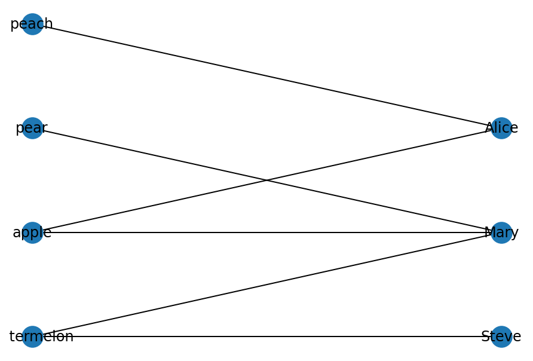
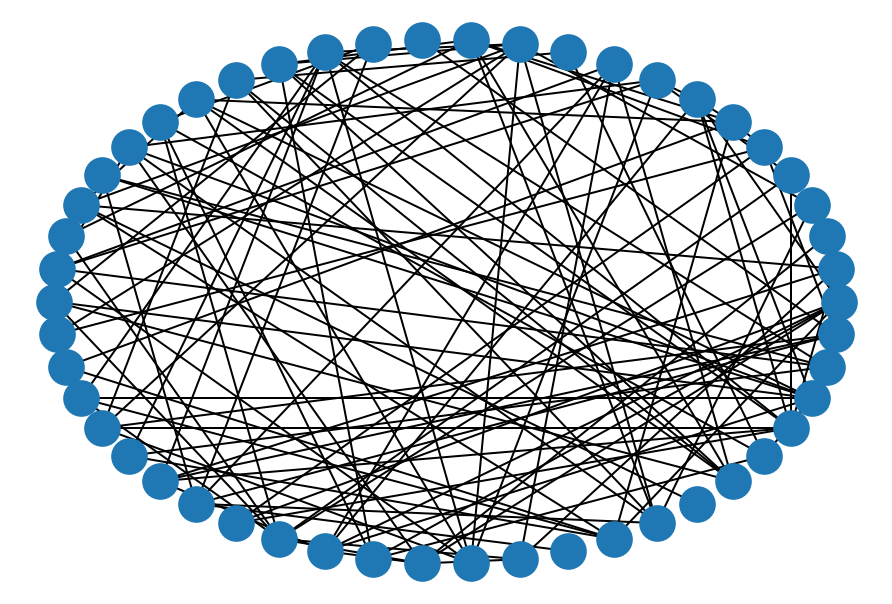

# import modules
import os
import numpy as np
import networkx as nx
#----- PLOTTING PARAMS ----#
import matplotlib.pyplot as plt
from matplotlib.pyplot import cm
%config InlineBackend.figure_format = 'retina'
%config InlineBackend.print_figure_kwargs={'facecolor' : "w"}Good resource to learn basics of Network science: - http://networksciencebook.com/chapter/0
Recent summary of Graph Network and their use in ML: - Relational inductive biases, deep learning, and graph networks
Examples of Network graphs: 1. NetworkX Example dataset 2. Stanford Large Network Dataset Collection
Network building and manipulation will be done using NetworkX - a python package made for this exact function
1. Basics
Nodes: Points which are connected to each other. Can represent people, words, or atoms – objects which have attributes of their own
Edges: Connection between the nodes - show how nodes (entities) are connected, bond distance, social network (friendships) – property which connect the entities
# Start an empty graph
G = nx.Graph()
# Add a node
G.add_node(42)
# Add node from list of entities
temp_list = ['A','B','C']
G.add_nodes_from(temp_list)G.nodesNodeView((42, 'A', 'B', 'C'))# Remove nodes
G.remove_node(42) #This is definite node name and should exist in the network
# Multiple nodes
G.remove_nodes_from(['A','Z','Blah']) #Here it is compared to the element to that in the list G.nodesNodeView(('B', 'C'))# add single edge - tuple of nodes (source, target)
# this also adds nodes if they don't already exist
G.add_edge('C','Z')print(G.edges, G.nodes)[('C', 'Z')] ['B', 'C', 'Z']# add multiple edges (list of tuples) [(source, target), (source, target)]
G.add_edges_from([('B', 'C') , ('B', 'Z')])G.edgesEdgeView([('B', 'C'), ('B', 'Z'), ('C', 'Z')])# Like nodes, we can remove multiple edges
# remove multiple edges (list of tuples)
G.remove_edges_from([('A', 'B') , ('C', 'B')]) #Here list are commutative G.edgesEdgeView([('B', 'Z'), ('C', 'Z')])# get number of nodes in network G
G.number_of_nodes()3# get number of edges in network G
G.number_of_edges()2# get number of neighbors (connections)
G.degree('B')1G.clear()2. Reading from a file
For example we will look at Facebook dataset installed from SNAP dataset
# input edgelist from file
G = nx.read_edgelist('./data/facebook_combined.txt')G.number_of_nodes()4039G.number_of_edges()88234# get the 2nd node's neighbors (retrieves a dictionary)
dict_neighbors = G.neighbors('2')G.degree('2')10list(dict_neighbors)['0', '20', '115', '116', '149', '226', '312', '326', '333', '343']G.clear()3. Type of different networks
a. Weighted Graphs
Edge weight Consider that the edge that you are adding should contain additional information, such as the strength of the connection. This would be important, for example, when analyzing communication networks to check friendship/connectivity strength. You want to capture how many times they exchanged e-mails, calls, text messages, to indicate the strength of the connection. For this you will assign weights to the edge, values that can be the number of communications, or the fraction of communications, normalized.
I had used this type of graph in my analysis for Indian spices. In that case, the edge was assigned a weight corresponding to the number of times a pair of spice occured together in a recipe.
# assign weight to edge
G.add_edge('Water','Soda', weight=10)Ways to access edge property:
G.edges.data()EdgeDataView([('Water', 'Soda', {'weight': 10})])G['Soda']['Water']{'weight': 10}G['Water']['Soda']{'weight': 10}# change edge weight
G['Water']['Soda']['weight'] = -1G.edges.data()EdgeDataView([('Water', 'Soda', {'weight': -1})])b. Directed Graphs
Incorporate directionality in the edge. Instead of having just the edge showing the connection: A — B encode a type of connection. If A is giving (food, resources, atoms, electrons) to B. In that case: A —-> B
#undirected
G.nodesNodeView(('Water', 'Soda'))# you can create a directed representation of network G
dg = nx.to_directed(G)dg.edgesOutEdgeView([('Water', 'Soda'), ('Soda', 'Water')])dg.get_edge_data('Water','Soda'){'weight': -1}c. Multigraphs
NetworkX provides classes for graphs which allow multiple edges between any pair of nodes. The MultiGraph and MultiDiGraph classes allow you to add the same edge twice, possibly with different edge data. This can be powerful for some applications, but many algorithms are not well defined on such graphs.
# multigraphs can store multiple edges information between same two nodes that can have different properties
MG = nx.MultiGraph()
MG.add_weighted_edges_from([(1, 2, 3.0), (1, 2, 75), (2, 3, 5), (1, 2, 4.2)])# lists the edges (node1, node2, edge_index), including the multiedges, adding the multiedge index as 3rd element in edge tuple
MG.edgesMultiEdgeView([(1, 2, 0), (1, 2, 1), (1, 2, 2), (2, 3, 0)])# lists the edges (node1, node2, weight/edge_attribute), the 3rd element is the weights of the edges
MG.edges.data('weight')MultiEdgeDataView([(1, 2, 3.0), (1, 2, 75), (1, 2, 4.2), (2, 3, 5)])MG.edges.data()MultiEdgeDataView([(1, 2, {'weight': 3.0}), (1, 2, {'weight': 75}), (1, 2, {'weight': 4.2}), (2, 3, {'weight': 5})])# check the weight of an edge
MG[1][2]AtlasView({0: {'weight': 3.0}, 1: {'weight': 75}, 2: {'weight': 4.2}})d. Bipartite
Bipartite graphs B = (U, V, E) have two node sets U,V and edges in E that only connect nodes from opposite sets. It is common in the literature to use an spatial analogy referring to the two node sets as top and bottom nodes.
from networkx.algorithms import bipartitebip = nx.Graph()# add nodes with the node attribute "bipartite", a network of who likes what fruits
bip.add_nodes_from(['apple', 'peach', 'watermelon', 'pear'], bipartite=0)
bip.add_nodes_from(['Alice', 'Steve', 'Mary'], bipartite=1)bip.add_edges_from([('Alice', 'apple'), ('Alice', 'peach'), ('Steve', 'watermelon'),
('Mary', 'pear'), ('Mary', 'apple'), ('Mary', 'watermelon')])nx.draw(bip, with_labels=True)
Currently, NetworkX does not provide a bipartite graph visualization method to visually delimit the two sets of nodes. However, we can draw the left and right set of nodes and see how they connect to each other. Further, you can play around with coloring the nodes based on the ‘bipartite’ attribute to further refine visually to which node set each node belongs to.
import scipy.sparse as sparse
X, Y = bipartite.sets(bip)
pos = dict()
pos.update((n, (1, i*10)) for i, n in enumerate(X))
pos.update((n, (1.5, i*10)) for i, n in enumerate(Y))
nx.draw(bip, with_labels=True, pos=pos)
Bipartite graphs can be projected as two separate graphs G1 = (U, E1) and G2 = (V, E2). The edges will be different though.
We can create a network of fruits, where nodes will be fruits and the edges will between two fruits will be created if someone likes both fruits. Such, peach and apple will have one edge, as Alice likes both. Same for apple and pear, which are both liked by Mary. Likewise, we can create the second network as the network of individuals, where connections between them will be their preference for the same fruit. Here, we can create a connection/edge between Steve and Mary since both of them like watermelon.
3. Network Models
Network models can be very useful for comparing their topology to the structural properties of our network built from real data. Different network models have very distinct structural characteristics, which defines their behavior in case of information flow on the network, attacks/failures on the nodes/edges, etc, and these properties have been extensively studied and are well documented. Knowing to which network model your graph corresponds to can provide valuable insights about its potential behavior under various circumstances.
There are a miriad of network models with different topological properties. Here we will try out some of the most useful ones (that frequently occur in real complex systems).
# Barabasi-Albert (scale-free) network
ba = nx.barabasi_albert_graph(10, 5)
nx.draw_spectral(ba, node_size=200)
Barabasi-Alber Graph. A graph of N nodes is grown by attaching new nodes each with M edges that are preferentially attached to existing nodes with high degree.
# Erdos-Renyi (random) network
er = nx.erdos_renyi_graph(50, 0.1)
nx.draw_circular(er)
# complete graph (every pair of nodes is connected by a unique edge)
complete = nx.complete_graph(5)
nx.draw(complete)